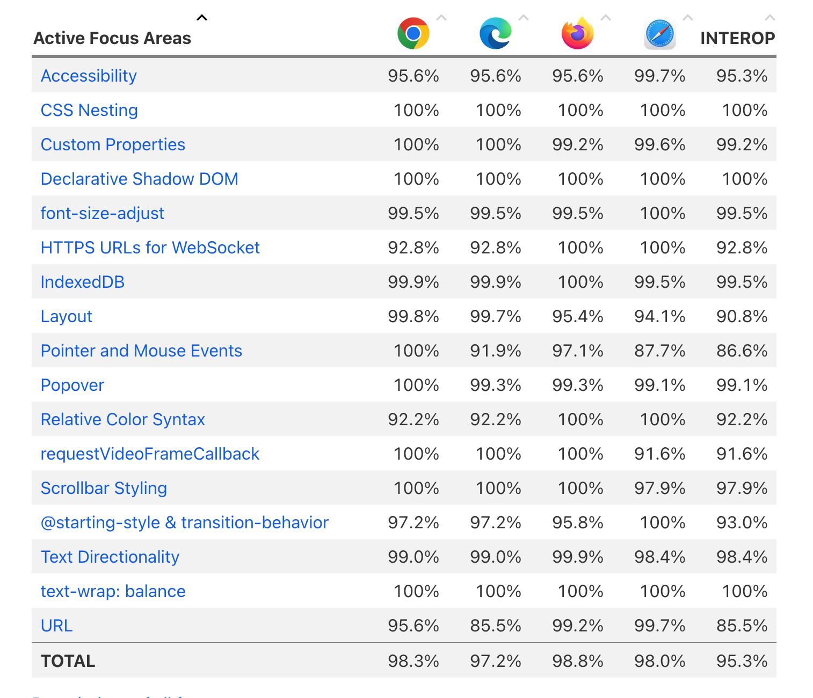
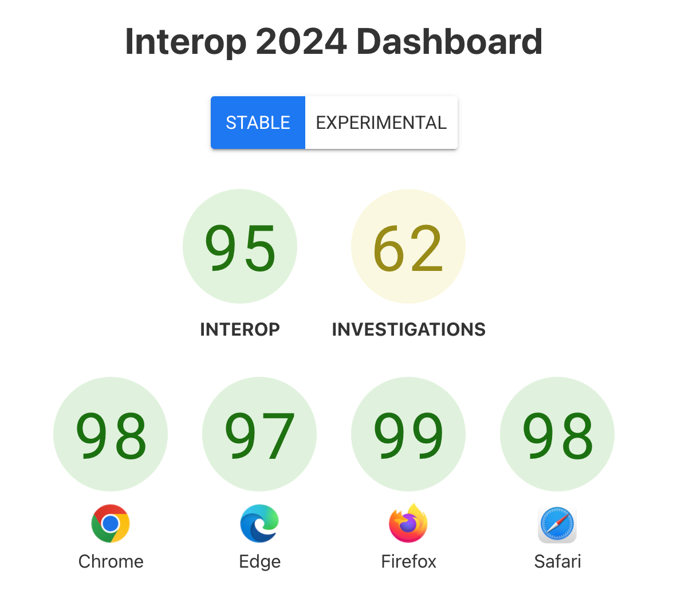
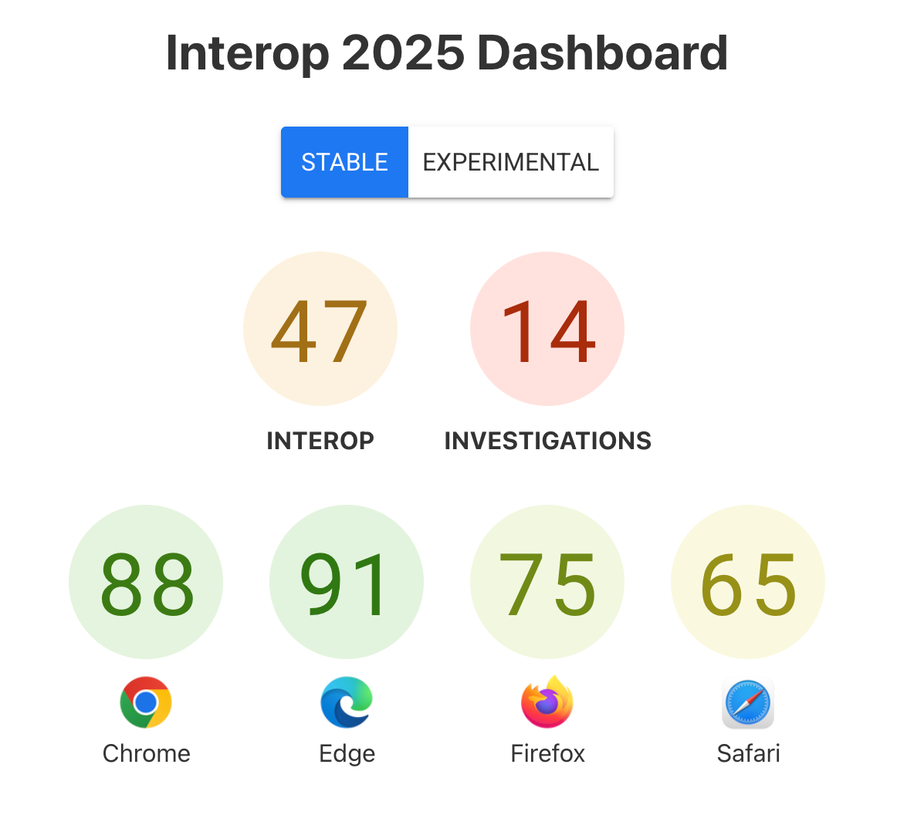
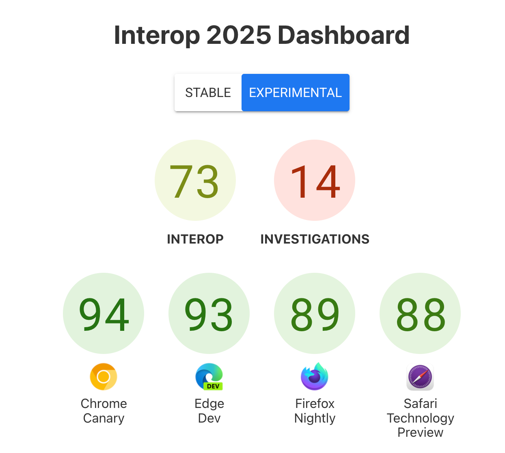
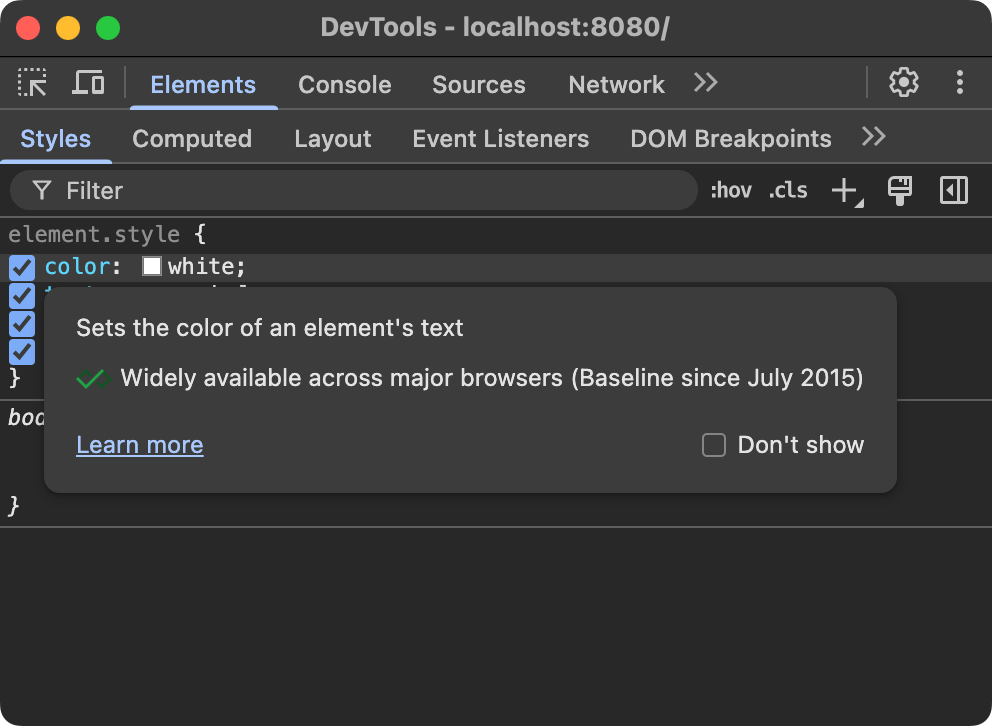
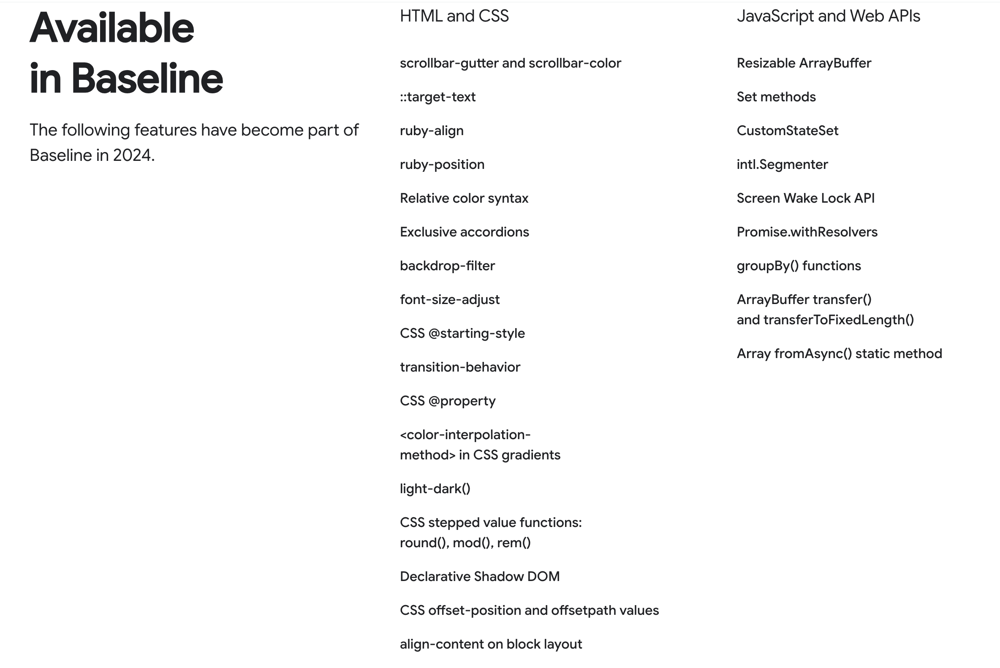
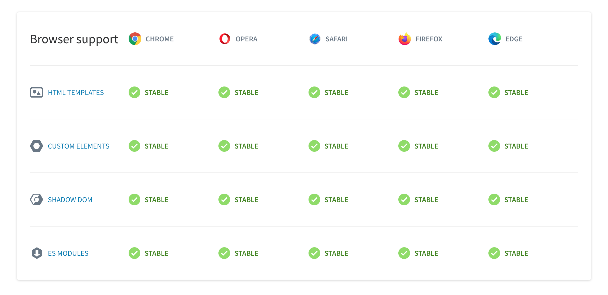

Тренды
во фронтенд разработке
в эпоху AI
Алексей Золотых
- Инженер
- Тимлид
- Спикер
Тренды
во фронтенд разработке
в эпоху AI


AI везде
Генерация кода
Вайб кодинг
Генерация тестов
- E2E
- Unit
Мне нравится
- Быстро
- Можно не уметь или не знать
- Современно
Меня пугает
- Меньше контроля
- Больше кода
- Дыры в безопасности
- Все заполонили чаты
- Не для всего
AI-инструменты доступности
| Инструмент | Бесплатно | Использование AI |
|---|---|---|
| axe DevTools | Бесплатная версия | AI-анализ выявленных проблем доступности и фильтрация ложных срабатываний для повышения точности |
| BrowserStack Accessibility Testing | Бесплатный план | AI-категоризация и ранжирование найденных нарушений, приоритизация рекомендаций по исправлению |
| accessScan (AccessiBe) | Бесплатно | AI-сканирование содержимого страниц и автоматическая генерация отчётов с рекомендациями по ремедиации |
| Deque’s Advanced Rules | Open Source (axe-core) | Machine vision для анализа визуальных элементов и AI-правила для расширенного покрытия тестирования |
| Equal Access AI (EA-AI) | Бесплатно | AI-модели для проверки соответствия WCAG 2.2/3.0 и автоматической классификации нарушений |
| Accessibility Insights for Web (MS) | Open Source | AI-анализ UI-элементов и FastPass-режим для автоматического выявления критических проблем |
Code Review
Можно быстро сделать самому
dev.to/pkorsch/gitlab-merge-review-with-ollama-automating-code-reviews-with-ai-python-2b6m
| Инструмент | Поддержка платформ | Цена/Доступность | Ссылка |
|---|---|---|---|
| PR-Agent (от Qodo) | GitHub, GitLab | Бесплатно (open-source, Apache 2.0) | github.com/qodo-ai/pr-agent |
| AI-PR-Reviewer | GitHub | Бесплатно (open-source) | github.com/coderabbitai/ai-pr-reviewer |
| AI-GitLab-Code-Review | GitLab | Бесплатно (open-source) | github.com/Evobaso-J/ai-gitlab-code-review |
| Matter AI | GitHub, GitLab, Bitbucket, Azure DevOps | Бесплатно (open-source, с Docker/локальным setup) | github.com/GravityCloudAI/matter-ai |
| LLM Code Review Maven Plugin | GitHub/GitLab via Maven CI | Бесплатно (open-source) | github.com/QuasarByte/llm-code-review-maven-plugin |
| Continue.dev | GitHub, GitLab, VS Code, JetBrains | Бесплатно (open-source, Apache 2.0) | github.com/continuedev/continue |
| OpenAI-Gitlab-PR-Review | GitLab | Бесплатно (open-source, требует OpenAI key) | github.com/nfacha/OpenAI-Gitlab-PR-Review |
JS медленный
Бандлеры
- Babel => esbuild

- Babel => swc

- Webpack => Vite(esbuild)
- Webpack => RSPack
- Parsel => Parsel
- Webpack => Turbopack
- Rollup => Rolldown
- Vite(Rollup) => Vite(Rolldown)
СSS
- PostCSS => PostCSS-RS
- Tailwind => Railwind
- Tailwind => tailwind_css
Еще
- Biome
- Typescript
MoleculerJS
- Moleculer Go
- Moleculer Rust
Typescript — стандарт
Анкеты
- Stack Overflow Developer Survey 2025, 44% активно используют
- State of JavaScript 2024 67% больше TS, чем JS
- State of Frontend 2024 90,6% разработчиков работают с TypeScript
Github
На 2м месте после python
Поддержка в NodeJS
node --experimental-strip-types example.ts;(
Браузеры радуют
Браузеры все более консистентны
https://wpt.fyi/interop-2025




Baseline
web.dev/baselineBaseline
| Newly available | The feature is supported by all of the core browsers, and is therefore interoperable |
| Widely available | 30 months have passed since the newly interoperable date. The feature can be used by most sites without worrying about support |


Инструменты
- Eslint css/require-baseline
- Browserlist
- Visual Studio Code

Фреймворки в целом затихли
Восход performance-ориентированных фреймворков
- Svelte/SvelteKit
- SolidJS
- Qwik
Astro и Islands Architecture
Стейт
- Redux уступает место более простым решениям
- Zustand как новый стандарт
- TanStack Query (React Query) доминирует в хранении серверного состояния
- React Context API
- Опять RxJS
Стандарты стабильно развиваются
Высокая производительность
- WebAssembly
- WebGPU
Адаптивного дизайн
- Контейнерные запросы (@container)
- CSS-вложенность
Новые парадигмы взаимодействия
- WebXR и Extended Reality
- Voice UIs и Conversational Interfaces
PWA 2.0
Offline first подход
Edge-computing и Serverless
Выполнение функций вблизи пользователя
A11y first подход
Веб вытесняет десктоп и WASM играет не последнюю роль
В разработке больших продуктов все стабильно
Feature-Sliced Design
- Появление специализированного инструментариума (Генераторы «слайсов», Линтеры, Линтеры архитектуры)
- Интеграция с монорепозиториями
- Расширение слоёв и рекомендаций
- Укрепление комьюнити и образовательных ресурсов
- Больше скептиков
Общее
В принципе, ты прав. Все, что способствует движению к предельной сложности и ускоряет его, — это добро...
А все, что мешает этому процессу или замедляет его —зло.
Такое определение добра и зла хорошо тем, что оно объективно и универсально.
Шантарам» (англ. Shantaram, маратхи शांताराम, «мирный человек») — роман 2003 года Грегори Дэвида Робертса
Усложнение продолжается
Ваш код скорее всего устарел
ИИ круто, но подходит далеко не всегда
Жду веб-компоненты

Спасибо!
|
слайды |
мой канал |
Алексей Золотых @zolotyh